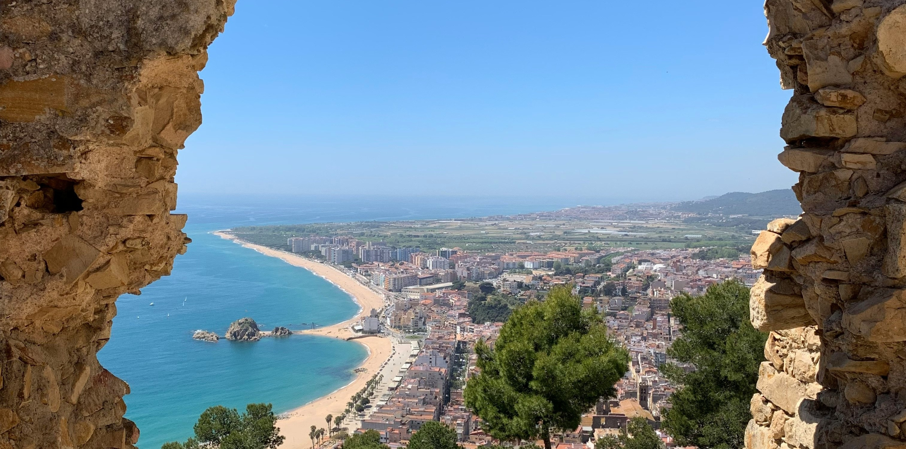
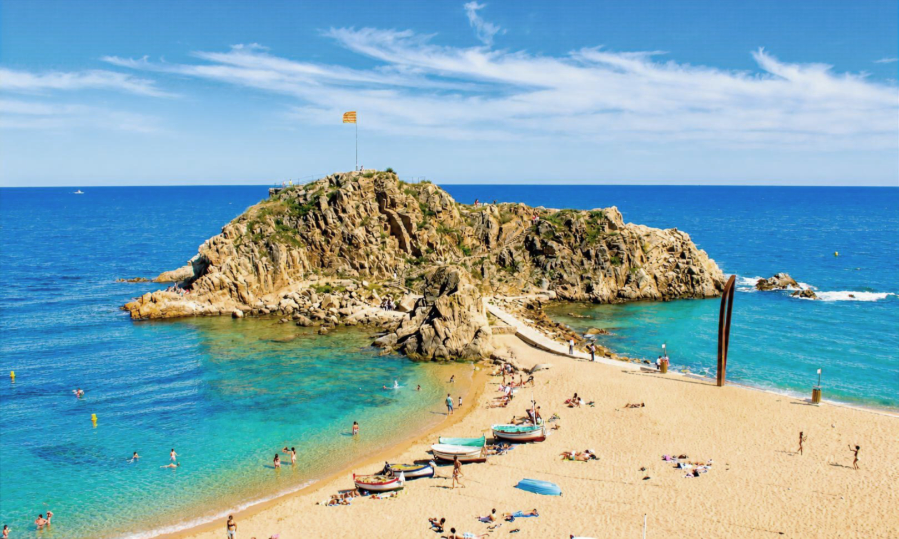

Amfitrions Blanes
Compromesos amb un turisme responsable, professional i integrat al municipi.
Uneix-te
Compromesos amb un turisme responsable, professional i integrat al municipi.
Uneix-teAmfitrions Blanes està formada per propietaris i gestors d'habitatges d'ús turístic del municipi, amb la voluntat d'unir el sector, representar-lo davant les administracions i crear un espai de col·laboració entre els seus membres.
Creiem que el diàleg, la informació compartida i la participació activa són la millor manera d'afrontar els reptes del present i contribuir al futur del turisme a Blanes.
Defensem els interessos del sector davant les administracions.
Compartim experiències, bones pràctiques i coneixement.
Informació actualitzada sobre normativa, novetats i comunicacions.
Eines i documentació útil per facilitar la gestió del dia a dia.

Formar part d'Amfitrions Blanes és sumar esforços per construir un sector més fort, més escoltat i millor preparat per afrontar els reptes del futur.
Incorporació gratuïta**Durant la fase inicial de l'associació.
Uneix-te
Si gestiones un habitatge d'ús turístic a Blanes o vols conèixer millor l'associació, estarem encantats d'escoltar-te.
Segueix el nostre canal de WhatsApp